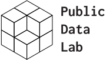

A Field Guide to “Fake News” and Other Information Disorders explores the use of digital methods to study false viral news, political memes, trolling practices and their social life online.
It responds to an increasing demand for understanding the interplay between digital platforms, misleading information, propaganda and viral content practices, and their influence on politics and public life in democratic societies.
It is a project of the Public Data Lab with support from First Draft.
The guide is freely available via the link below.
It is released under a Creative Commons Attribution license to encourage readers to freely copy, translate, redistribute and reuse the book. All the assets necessary to translate and publish the guide in other languages are available on the Public Data Lab’s GitHub page.
Coordinated by


In collaboration with:
- Centre for Journalism Studies, University of Ghent, BE
- Citizen Data Lab, Amsterdam University of Applied Sciences, NL
- DensityDesign Lab, Politecnico di Milano, IT
- Digital Methods Initiative, University of Amsterdam, NL
- École Normale Supérieure de Lyon, FR
- Department of Digital Humanities, King’s College London, UK
- Institut Rhônalpin des Systèmes Complexes, FR
- Institute for Policy Research, University of Bath, UK
- Laboratoire d’Étude des Sciences et des Techniques (STS-Lab), Université de Lausanne, CH
- Laboratoire Interdisciplinaire Sciences Innovations Sociétés (LISIS), Université Paris-Est Marne-la-Vallée, FR
- médialab, Sciences Po, Paris, FR
- Techno-Anthropology Lab, Aalborg University Copenhagen, DK
- Media of Cooperation Research Group, University of Siegen, DE
Featured on:
- LSE Impact Blog – “Three Ways in Which Digital Researchers Can Shed Light on the Information Politics of The “Post-Truth” Era”, 6th February 2017 - London (UK)
- First Draft – “Announcing New Research”, 3rd March 2017 - New York (US)
- London School of Economics Polis Blog – “‘Fake news’: the best thing that’s happened to journalism”, 11th March 2017 - London (UK)
- American Press Institute – “A Field Guide to Fake News”, 13th March 2017 - Arlington, VA (US)
- NRC – “Alt-right-beweging juicht op het web hard voor Baudet”, 16th March 2017 - Amsterdam (NL)
- University of Cambridge – “Fake News, Algorithmic Accountability and the Role of Data Journalism in the Post-Truth Era”, Centre for Research in the Arts, Social Sciences and Humanities (CRASSH), 23rd March 2017 - Cambridge (UK)
- British Library – “St. Pancras Intelligencer No. 40 - Fake News Special”, 30th March 2017 - London (UK)
- Lancaster University – “Data Publics”, 1st-2nd April 2016 - Lancaster (UK)
- BuzzFeed News – “In Spite Of The Crackdown, Fake News Publishers Are Still Earning Money From Major Ad Networks”, 4th April 2017 - Toronto (CA)
- The Wrap – “Fake News Sites Are Still Cashing In From Major Ad Networks”, 4th April 2017 - Los Angeles (US)
- Wired Italia – “Il Design dell’Informazione”, 4th April 2017 - Milan (IT)
- La Repubblica – “Non Si Ferma La Pubblicità Sui Siti Di Bufale, Il Business Delle Fake News Rende Ancora”, 5th April 2017 - Rome (IT)
- EU Reporter – “Lies, damn lies and #FakeNews”, 5th April 2017 - Brussels (BE)
- DerStandard.at – “Fake News: Entstanden aus einer gescheiterten Revolution”, 6th April 2017 - Vienna (AT)
- International Journalism Festival – Launch for A Field Guide to Fake News, 7th April 2017 - Perugia (IT)
- Nieman Lab – “What Does Fake News Tell Us About Life in the Digital Age? Not What You Might Expect”, 7th April 2017 - Cambridge, MA (US)
- Nieman Lab – “What is the right amount of money to throw at the fake news problem?”, 7th April 2017 - Cambridge, MA (US)
- Columbia Journalism Review – “First Draft and Public Data Lab Release Guide to Savvy Reporting on Fake News”, 7th April 2017 - New York (US)
- Journalism.co.uk – “New Guide to Fake News Aims to Help the Public Understand How These Stories Circulate Online”, 8th April 2017 - Brighton (UK)
- Aalborg University Copenhagen – “Fake News Field Guide Data Sprint”, 24-28th April 2017 - Copenhagen (DK)
- New York Times – “In French Elections, Alt-Right Messages and Memes Don’t Translate”, 4th May 2017 - New York (US)
- Global Investigative Journalism Network – “A Global Guide to Initiatives Tackling ‘Fake News’”, 8th May 2017 - Maryland (US)
- Friedrich Ebert Stiftung and Political Capital – “The political effects of migration-related fake news, disinformation and conspiracy theories in Europe, 24th May 2017 - Budapest (HU)
- New York Times – “Facebook’s Role in European Elections Under Scrutiny”, 7th June 2017 - New York (US)
- King’s College London – “Computational Fake News Analysis: A Practical Workshop”, 15-16th June 2017 - London (UK)
- Yahoo Japan – “Launch of New Study Group for Understanding Fake News in Japan”, 19th June 2017 - Tokyo (JP)
- Institute of Policy Studies, Lee Kuan Yew School of Public Policy, NUS – “What Lies Beneath the Truth: A Literature Review on Fake News, False Information and More”, 30th June 2017 - Singapore (SG)
- Society of Professional Journalists – “Fact-Checking Resources”, 9th July 2017 - Indianapolis, IN (UK)
- Videnskab.dk – “Danske forskere afliver myte om sociale medier”, 6th September 2017 - Copenhagen (DK)
- University of Bath – “Politics, Fake News and the Post-Truth Era”, 14th September 2017 - Bath (UK)
- King’s College London – “Studying the Social Life of Fake News Online”, 11th October 2017 - London (UK)
- University of Copenhagen and Lund University – “Social Media and Democracy: New Challenges for Political Communication Research”, 26-27th October 2017 - Copenhagen (DK)
- Nieman Lab – “A Snap Election (and Global Worries over Fake News) Spur Fact-Checking Collaborations in Japan”, 30th October 2017 - Cambridge, MA (US)
- Burkhardt, J. M. (2017). Combatting Fake News in the Digital Age. Library Technology Reports, 53(8), 22–28., 1st November 2017 - Chicago (US)
- McNair, B. (2017). Fake News: Falsehood, Fabrication and Fantasy in Journalism. London: Routledge, 7th November 2017 - London (UK)
- ScienceNordic – “New study counters social media fears”, 28th November 2018 - Copenhagen (DK)
- Sciences Po, Paris – “DataPol”, 29th November - 2nd December 2017 - Paris (FR)
- Medialab Katowice – “Data for Culture”, 2nd December 2017 - Katowice (PL)
- Le Monde – “Comment des chercheurs ont utilisé les données du Décodex pour analyser la présidentielle”, 4th Deccember 2017 - Paris (FR)
- Otto, K., & Köhler, A. (Eds.). (2018). Trust in Media and Journalism. New York: Springer, 7th January 2018 - New York (US)
- Poynter – “This New Guide is Like a Cookbook for Investigating Fake News”, 8th January 2018 - Florida (US)
- Committee for the Anthropology of Science, Technology & Computing (CASTAC) Blog – “Journalists Won’t Get the ‘Fake News’ Story Right: They Need Help”, 9th January 2018 - Arlington (US)
- Reilly, I. (2018). F for Fake: Propaganda! Hoaxing! Hacking! Partisanship! and Activism! in the Fake News Ecology. The Journal of American Culture, 41(2), 139–152., 14th January 2018 - Chichester (UK)
- Harsin, Jayson. 2018. ‘A Critical Guide to Fake News: From Comedy to Tragedy’. Pouvoirs No 164 (1): 99–119., 20th January 2018 - Paris (FR)
- BlogWatch – “Moves to fight “Fake News” and other information disorders in 2018, 27th January 2018 - Philippines (PH)
- Clingendael, the Netherlands Institute of International Relations - “Fake News and What (Not) to Do About It”, 1st February 2018 - Hague (NL)
- Stimuleringsfonds voor de Journalistiek - “6 lessen die het makkelijker maken om nepnieuws te onderscheiden”, 5th February 2018 - Hague (NL)
- Open Culture – “A Field Guide to Fake News and Other Information Disorders: A Free Manual to Download, Share & Re-Use”, 8th February 2018 - Mountain View (US)
- UNESCO – “World Trends in Freedom of Expression and Media Development: 2017/2018 Global Report”, 1st March 2018 - Paris (FR)
- University of Cambridge – “Post-Truth Phenomenon” Teach-Out Conference, 15-17th March 2018 - Cambridge (UK)
- Bennett W.L. & Livingston S. (2018). The Disinformation Order: Disruptive Communication and the Decline of Democratic Institutions. European Journal of Communication 33(2): 122–139., 1st April 2018 - London (UK)
- Japan Center of Education for Journalists – “JCEJ provides resources to help journalists in social media coverage”, 1st May 2018 - Tokyo (JP)
- Yahoo Japan – “フェイクニュースの議論で欠落する、国家間の「情報戦」「ビジネス戦」という視点”, 15th June 2018 - Tokyo (JP)
- Moats D. & Borra E. (2018). Quali-Quantitative Methods Beyond Networks: Studying Information Diffusion on Twitter with the Modulation Sequencer. Big Data & Society 5(1)., 19th June 2018 - London (UK)
- Marres, N. (2018). Why We Can’t Have Our Facts Back. Engaging Science, Technology, and Society, 4(2018), 423–443., 25th July 2018 - Evansville, IN (US)
- Venturini, T., Jacomy, M., Bounegru, L. & Gray, J. (2018). “Visual Network Exploration for Data Journalists.” In The Routledge Handbook to Developments in Digital Journalism Studies, edited by Scott Eldridge II and Bob Franklin. Abingdon: Routledge., 30th August 2018 - Abingdon (UK)
Contact
Please direct any inquires about this project to the co-investigators (Liliana Bounegru, Jonathan Gray, Tommaso Venturini and Michele Mauri) at fakenews at publicdatalab.org.